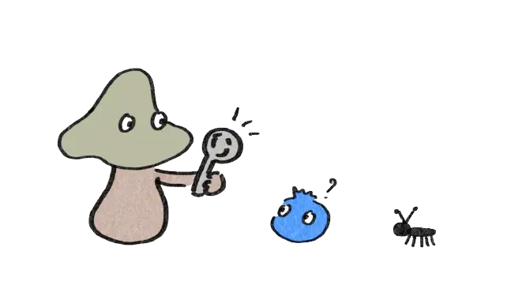

Forneden kan du klikke dig igennem forskellige danske landskaber og finde en masse information om dem alle. Hvert landskab har sin egen logik - og sine egne regler, som du kan lære at kende. Når du har sat dig ind i landskabernes særlige kendetegn, kan du hurtigt aflæse dine omgivelser og finde frem til de spiselige planter.
